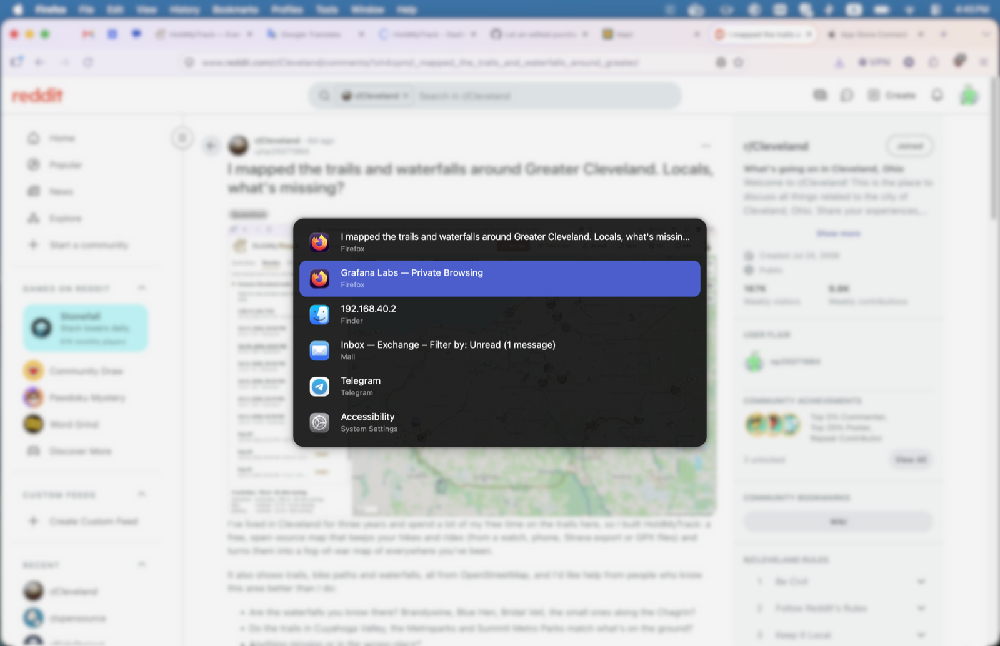

scope
Keyboard-first window switching on macOS, scoped to the current Space.
Keyboard focus follows you between Spaces, and the Space shortcuts switch instantly, or with a slide as long as you like.

What it does
⌘ Tab
A window switcher for this Space
Lists windows, not apps, from the current Space only, most recently used first. Hold ⌘, tab to the one you want, release.
⌃ ← → or a swipe
Focus that follows you
Arrive on a Space and you can type straight into the window you last used there, even when macOS left focus somewhere else.
⌃ 1 … ⌃ 9
Space shortcuts that keep up
Switch instantly, or with a slide as long as you choose, and they still work while a swipe is sliding.
Small on purpose
- One open-source binary of about 1 MB, run as a background service. No app, Dock icon or menu bar.
- One permission, Accessibility. No Screen Recording, no network.
- Set up in a text file, controlled with a few commands.
- Swipes, Mission Control and Stage Manager keep working exactly as before.
Install
macOS 13 or later, on Apple Silicon or Intel. In Terminal:
curl -fsSL https://raw.githubusercontent.com/np25071984/Scope/main/install.sh | sh
Or with Homebrew:
brew tap np25071984/scope https://github.com/np25071984/Scope brew trust np25071984/scope brew install scope brew services start scope
On first start, scope asks for Accessibility permission and opens the right pane of System Settings: turn on scope there. Everything else, from settings to uninstalling, is in the README.